Design de services
2024
Quand faut-il tout repenser ?
Améliorer FreshKDS, le système d’affichage des commandes d’un café très fréquenté
Image I · L’écran de commandes du barista, avant et après. J’ai gardé la mise en page et modifié uniquement ce qui ralentissait l’équipe.
Rôle
Designer et barista
Période
2024
Lieu
Pilot Coffee Roasters
Union Station, Toronto
Outils
Figma
La question
« Comment améliorer une expérience opérationnelle existante sans y ajouter de complexité inutile ? »
Aperçu
Barista au café Pilot Coffee Roasters d’Union Station, j’utilisais FreshKDS tous les jours : c’est une application iPad qui indique aux baristas quelles boissons préparer. Pilot est une chaîne de cafés de Toronto, avec des cafés et des torréfactions dans toute la ville, et chaque adresse a des besoins différents. Le café d’Union Station est le plus fréquenté : il accueille certains jours trois fois plus de clients qu’un café moyen. Pourtant, tous les cafés utilisent la même application.
Plutôt que de la repenser entièrement, j’ai cherché les quelques endroits où elle ralentissait l’équipe, et je n’ai corrigé que ceux-là, en conservant son parcours, sa mise en page et son identité visuelle. Le projet portait moins sur l’interface que sur l’adaptation du système à un café au rythme soutenu.
Plutôt que de la repenser entièrement, j’ai cherché les quelques endroits où elle ralentissait l’équipe, et je n’ai corrigé que ceux-là, en conservant son parcours, sa mise en page et son identité visuelle. Le projet portait moins sur l’interface que sur l’adaptation du système à un café au rythme soutenu.
Comment les commandes arrivent au bar
Les commandes arrivent de trois façons : à la caisse, en commande à emporter via l’application de Pilot, et via des applications de livraison comme SkipTheDishes et DoorDash. Toutes arrivent sur l’iPad du barista. Voici le processus quand tout se passe bien.

Fig. 1 · Trois façons de commander chez Pilot Coffee Roasters : en magasin, via l’application de Pilot et via les applications de livraison. Chaque parcours aboutit au même écran KDS (les cases crème).
Ce que j’ai changé
01Les commandes mobiles apparaissent à l’écran au bon moment, sans minuteur manuel.
02Les articles en rupture peuvent être remboursés depuis le bar, sans que les clients fassent la queue pour demander.
03On retrouve les commandes clôturées par nom, par lettre ou par type de commande.
04Une palette de couleurs simplifiée, et les commentaires de l’équipe distincts de ceux des clients.
Sommaire
Sélectionnez un chapitre pour l’ouvrir ou le fermer
I.Problème et objectifsp. 1
Union Station est surnommé le café « fast-food » : peu de places assises et un flot continu d’employés de bureau et de voyageurs. L’équipe est souvent épuisée. Avec le temps, elle s’était discrètement adaptée à l’application en inventant des solutions de contournement, si bien qu’une grande partie de la frustration passait inaperçue. Le parcours général de l’application fonctionne bien ; il n’avait simplement pas été pensé pour ce rythme.
Objectifs
01Rendre l’équipe plus rapide au poste espresso et lait. Mesure : régler tous les problèmes causés par l’application, ou la plupart.
02Montrer que le design d’origine convient à un café au rythme soutenu sans refonte. Mesure : garder le parcours et les éléments de design d’origine ; seulement modifier et ajouter.
03Aider l’équipe à se sentir moins stressée et moins submergée. Mesure : une palette de couleurs limitée, un design direct, et moins d’appuis et de balayages.
II.Recherchep. 2
Avant ce projet, j’ai noté tout ce qui me frustrait dans l’application en tant que barista, et j’ai observé de façon informelle comment mes collègues l’utilisaient pendant leur service. J’ai noté ce qu’ils disaient en travaillant, mais j’ai choisi de ne pas les interroger au début : lors de projets précédents, l’équipe avait tendance à exagérer les problèmes du café. Souvent, leur comportement montrait qu’ils « comprenaient » un problème dont ils n’avaient pas conscience.
Méthode
01Repérer les problèmes ; recueillir et observer les interactions de l’équipe
02Faire des wireframes du système actuel et recréer les parties utiles dans Figma
03Imaginer des solutions avec des collègues et des pairs
04Prototypage improvisé
05Concevoir les solutions dans Figma et animer chaque écran
Contraintes
01Je ne pouvais pas tester de changements dans l’application réelle, ce qui rendait difficiles les choix de taille des boutons, de hiérarchie et de nouvelles fonctionnalités.
02L’équipe disait qu’elle ne saurait si une solution fonctionnait qu’en l’essayant pendant un coup de feu.
03J’étais la seule designer, sans aucun retour de l’entreprise elle-même.
04Je me suis surtout appuyée sur ma propre expérience et sur un petit groupe de cinq personnes.
III.Wireframes et prototypagep. 3
J’ai dessiné le système actuel à côté de plusieurs solutions possibles, puis recréé les écrans utiles dans Figma.

Fig. 2 · Wireframes de l’application d’origine et de solutions possibles.
Le papier ne fonctionnait pas derrière le bar
Une professeure de design de services m’a suggéré un prototype papier, mais le bar est animé et exigu, et il gênait l’équipe. J’ai plutôt suivi mes collègues et mimé chaque solution à l’avance, pour voir si elle raccourcissait ou supprimait une étape. Les solutions se sont révélées être des versions plus simples des solutions de contournement que tout le monde utilisait déjà.
IV.Les solutionsp. 4
Chaque changement répond à un problème que j’ai constaté pendant mon service. Tous les nouveaux éléments suivent le style existant de FreshKDS.
Les commandes mobiles, à l’heure
Les précommandes passées dans l’application arrivent en avance, alors l’équipe devait mettre chacune en attente et régler un minuteur à la main. J’ai ajouté un système de notification : une commande mobile apparaît dans sa propre zone en bas de l’écran au moment voulu, sans minuteur manuel.
Avant
Fig. 3 · Quatre appuis pour mettre une commande mobile en attente et régler un minuteur.
Après
Fig. 4 · Aucun appui : les commandes dues remontent d’elles-mêmes.
Rupture de stock, remboursée depuis le bar
Quand un article commandé via l’application était en rupture, les clients devaient entrer, demander, et attendre que la file diminue pour être remboursés. J’ai ajouté une alerte qui permet au barista de rembourser l’article d’un seul appui et prévient le client, qui n’a plus à faire la queue.
Après

Fig. 5 · Trois appuis pour rembourser un article en rupture depuis le bar.
Retrouver une commande clôturée
Pour rembourser ou modifier une commande clôturée, l’équipe devait ouvrir chaque onglet un par un, car seules les commandes de l’application affichaient un nom. J’ai ajouté une barre de recherche, des boutons pour les premières lettres les plus fréquentes parmi les noms du jour, et un interrupteur pour n’afficher que les commandes mobiles.
Avant
Fig. 6 · Toutes les commandes clôturées se ressemblent, alors l’équipe les ouvre une par une.
Après

Fig. 7 · Filtrer par première lettre ou par commandes mobiles, puis rembourser un article.
Des couleurs plus calmes
L’écran était surchargé, ses couleurs n’avaient pas de sens clair, et les commentaires privés de l’équipe et des clients se ressemblaient, même sur les tickets. J’ai gardé la mise en page, simplifié la palette et donné des couleurs différentes aux commentaires de l’équipe et des clients.

Fig. 8 · Cartes de commande. À gauche : les quatre cartes d’origine. À droite : les nouvelles cartes que j’ai conçues, pour les commandes classiques, mobiles, Craver et SkipTheDishes.
V.Bilanp. 5
Avant de commencer, je me suis demandé si tout le système devait être repensé. Ce n’était pas le cas : FreshKDS fonctionne bien dans les cafés plus calmes, mais pourrait être mieux adapté aux cafés au rythme soutenu, afin de réduire le stress de l’équipe. Repérer ce stress, surtout quand les gens ont mis en place des solutions de contournement sans s’en rendre compte, s’est révélé être la clé de tout le projet.
Grâce à ce projet, j’ai pratiqué l’observation des utilisateurs, la détection des failles d’un système, le travail sous de fortes contraintes, et le respect de l’identité d’une marque tout en l’enrichissant. J’ai contacté FreshKDS et mes responsables chez Pilot Coffee Roasters, mais je n’ai pas obtenu assez de retours pour modifier le système réel. Idéalement, je testerais ces solutions au café pendant un coup de feu, et j’observerais comment d’autres cafés très fréquentés gèrent les mêmes problèmes.
Projet suivant
Des cours aux carrières